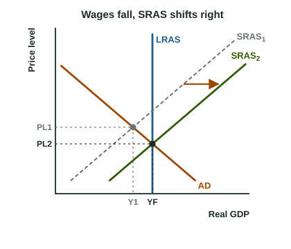

An output gap does not last forever, even if no one does anything about it. The reason is not that spending recovers by magic. It is that wages and other input prices, sticky in the short run, eventually adjust, and that moves short-run aggregate supply. This page shows the mechanism step by step, because on the exam the point goes to the student who names the cause, not just the curve.
From a recessionary gap

Start where AD meets SRAS1 at Y1, left of LRAS (the graph). Real GDP is below full-employment output, so:
- Unemployment is above the natural rate. Many people want jobs; few firms are hiring.
- Nominal wages and input prices fall. As contracts come up for renewal, workers accept smaller raises or lower pay, and suppliers cut prices to find buyers.
- SRAS shifts right. Lower costs mean firms supply more at every price level.
- The economy moves down along AD until SRAS2 crosses AD on LRAS: real GDP is back at YF and the price level has fallen to PL2.
Notice what did not move: AD stays where it was and LRAS stays at YF. The whole adjustment is SRAS.
From an inflationary gap
Now start with AD meeting SRAS right of LRAS. Output is above full employment, so unemployment is below the natural rate. Firms compete for scarce workers and bid wages up, and input prices rise. Higher costs shift SRAS left, and the economy moves up along AD until output is back at YF, at an even higher price level.
| Recessionary gap | Inflationary gap | |
|---|---|---|
| Unemployment | above the natural rate | below the natural rate |
| Nominal wages and input prices | fall | rise |
| SRAS | shifts right | shifts left |
| Price level | falls | rises |
| Real GDP | rises to YF | falls to YF |
Worked example: track the adjustment in data. Country G's full-employment real GDP is 1,000 billion dollars and its natural rate of unemployment is 5%. After a fall in spending, with no policy response:
- Year 1: real GDP 900, unemployment 8%. A recessionary gap of billion dollars.
- Years 2 to 4: the nominal wage index falls from 100 to 95, a change of
. Lower costs shift SRAS right. - Year 4: real GDP is 1,000 and unemployment 5%: long-run equilibrium again. The price level has fallen from 100 to 96.
- The cause, in one line: high unemployment lowered nominal wages, which shifted SRAS right until output returned to full employment.
Common slip: writing "the economy returns to full employment because AD shifts back." With no policy, spending does not change: AD stays put. Another slip is saying "SRAS shifts right" without the reason. The point is earned by the link: unemployment above the natural rate, so nominal wages and input prices fall, so SRAS shifts right.
What the long run says about demand
Put the short run and the long run together. Exports boom and stay high: AD shifts right, and in the short run the price level and output both rise. Then labor is scarce, wages rise, and SRAS shifts left until output is back at YF. The final result: the same real GDP, a higher price level. In the long run, a change in aggregate demand changes the price level only; real output is set by LRAS.
The adjustment can be slow, especially out of a recession. Wage contracts run for a year or more, and employers are reluctant to cut nominal pay because it hurts morale. That slowness is one reason governments sometimes act instead of waiting, which the next topic takes up.